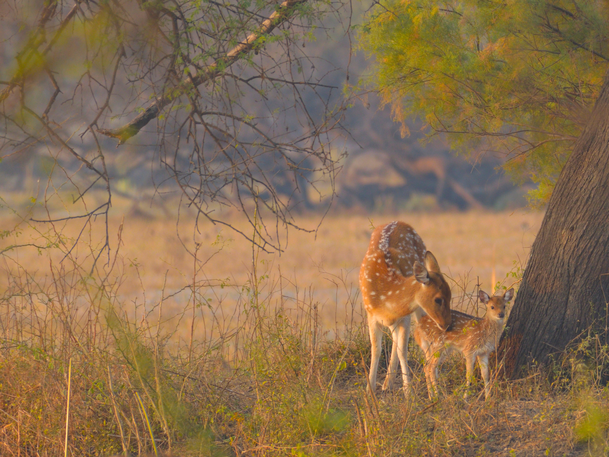
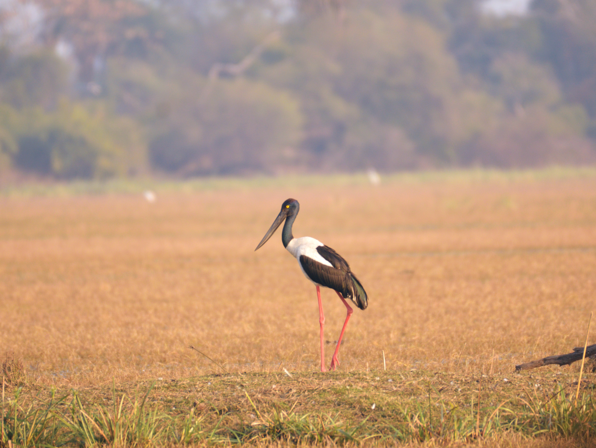
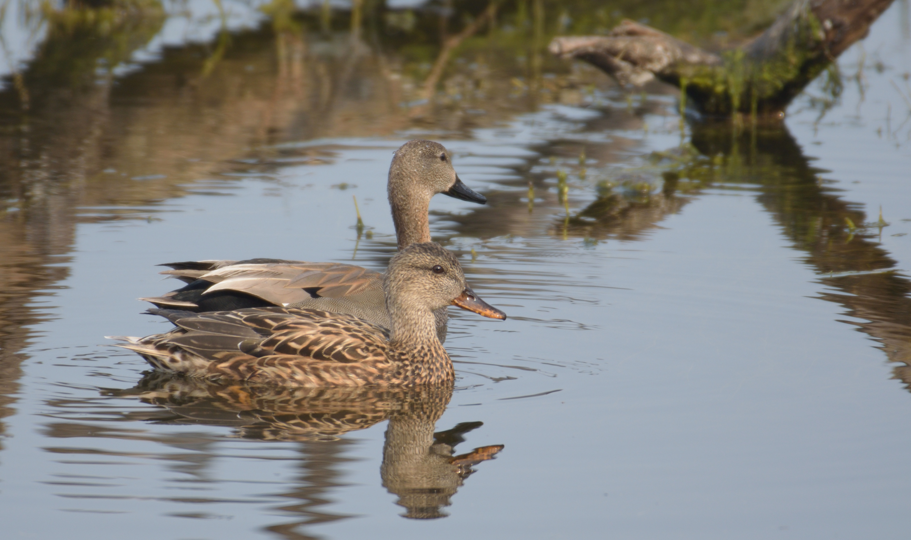

Jan-Feb 2020

Painted Stork. The distinctive pink tertial feathers of the adults give them their name.

The canopied mud ways are to be vacated before sunset.

Spotted Deers. The fawn and its mother stay together for about one year.

Black-necked stork. These are large birds. They grow upto 4 ft tall with 7.5 ft wingspan.

Female Nilgais - notice the white patch on neck. Adult males have a bluish-grey coat.

Gadwall pair. Female in foreground, male at the aft.

Common Kingfisher. It feeds mainly on fish, caught by diving.
A challenge for any diving bird is the change in refraction between air and water.
The eyes of many birds have two foveae (the area of the retina with the greatest density of light receptors).
A kingfisher can switch from the main central fovea to the auxiliary fovea when it enters water.
A retinal streak of high receptor density which connects the two foveae allows the image to swing temporally as the bird drops onto the prey.
Source: wikipedia

Juvenile Spotted Owlets asleep.

Rose-ringed Parakeet.
The rose-ringed parakeet is sexually dimorphic (the condition where the sexes of the same species exhibit different characteristics, particularly characteristics not directly involved in reproduction).
The adult male sports a red and black neck ring, and the hen and immature birds of both sexes either show no neck rings, or display shadow-like pale to dark grey neck rings.
Thus, we cannot tell without close observation - if this bird is a female or a juvenile male.
Source: wikipedia

Shrike.
This website is built with pandoc.
Last Updated: Tue 10 May 08:19:17 IST 2022